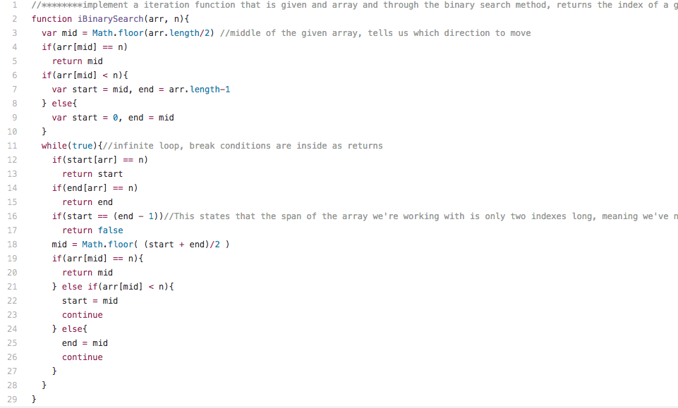

<div>
  <h2 class="shadow"><a href="https://github.com/jerrodq2/Algorithms/blob/master/recursion/recursion_functions_using_iteration_instead/iBinarySearch.js">See Full Code</a></h2>
  <h3 class="shadow">Non-recursive Binary Search</h3>
  <hr>
  <div class="alg_img">
    
  </div>
</div>
